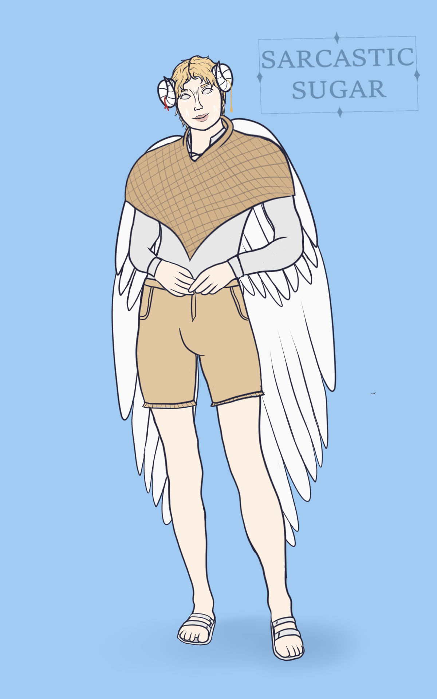
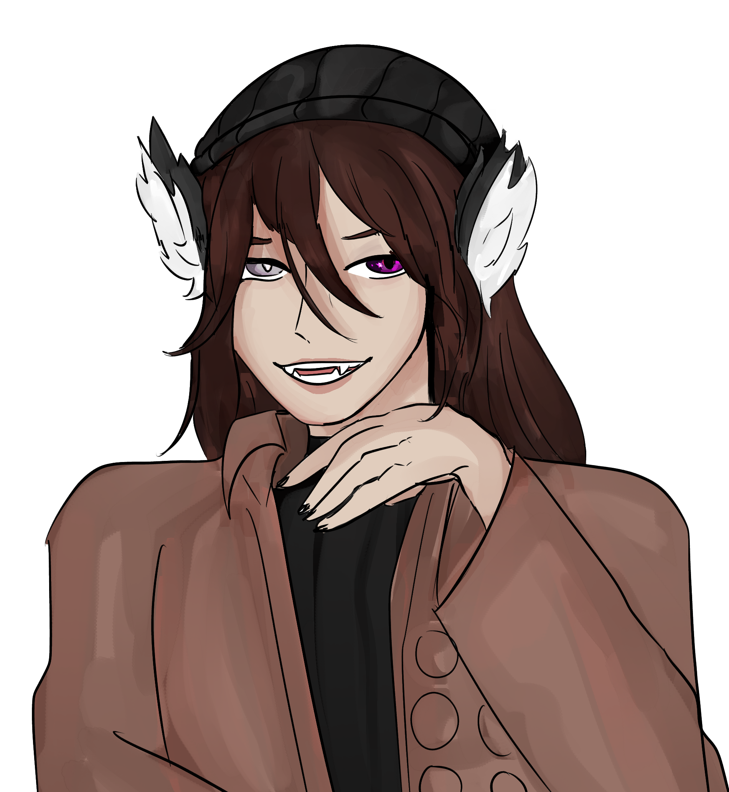
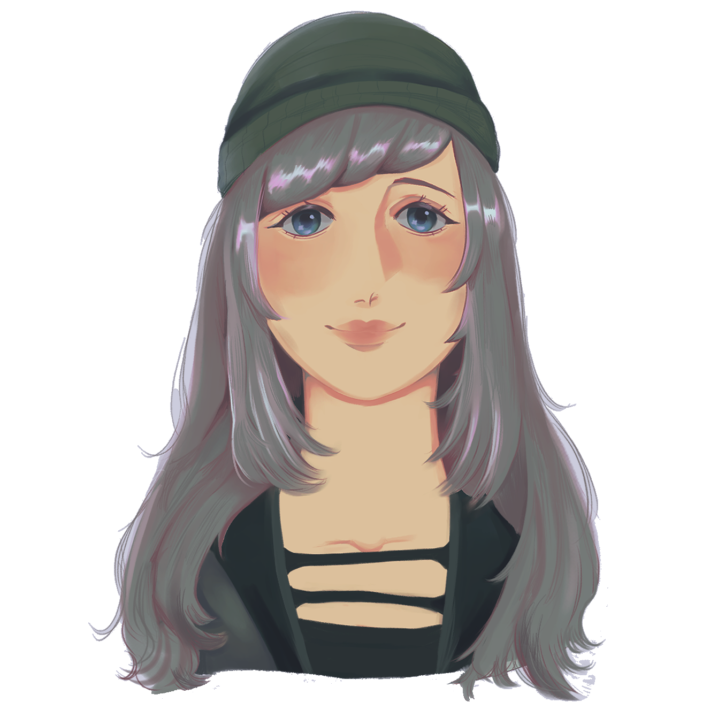
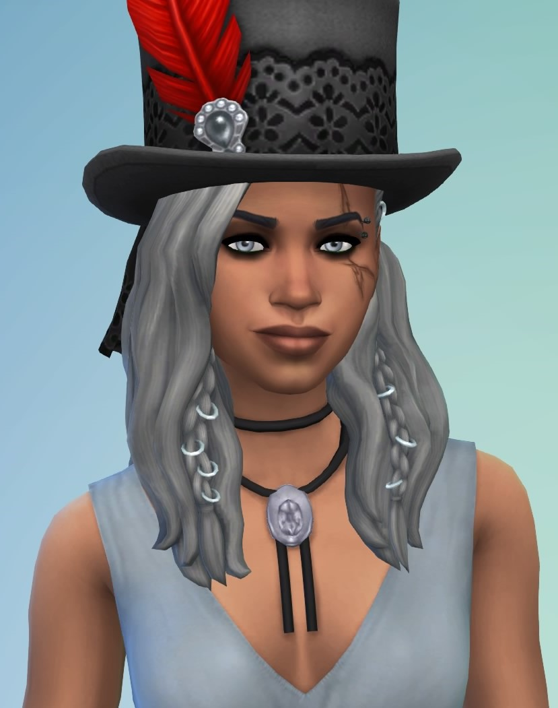

"My life is my own to lead and I will always lead it with kindness."
Theme: Fire Eyes - SuprhotTitle: The Speaker of the Above
Full Name: High Priest Hyrim
Nicknames: None yet
Birthday: 'When the leaves turn red'
Age: His race age extremely slowly but he would be around middle-late 20s in human years
Race: Angelic Creature
Height: 5'10
Status: Alive
Job: Works with Ophelia and Zephyr
Affiliations: Mars College, Portal Hallway, Ophelia and Co.
Early Life
Hyrim was only a few years old when he heard deep whispers echoing around his head. When he told others, they rejoiced. They called him 'The Speaker' and raised him in his faith. Once he became of age, they performed his Ascension. Now imbued with the power of The Above, he spent his days translating and reiterating what the voices say. What they say goes, no matter what. The only thing Hyrim made a choice for was what he used his powers for. He chose to be a cleanser, helping visitors to their world.
Plot Life
After many years of the townsfolk coming to him for guidance, he was starting to grow tired. He yearned for his own life. But one day it happened in the worst way possible. While appreciating some alone time, Hyrim saw a dark black fog grow across the horizon and the skies started to turn red. Voices called for him from the fog, his friends. His parents. They called for him to 'complete his purpose and join them' but..he didn't. He made his first choice in years and summoned his power to leave his world. He had a vision of a city full of animal people in his mind, so he aimed for that world. He fell into some adjascent worlds and was severely injured but finally he managed to reach the right world. Falling into Ophelia's emporium, she helped him recover and settle down in this new world while he slowly learnt how to deal with his emotions.
Current Life
He is now settling down in Ophelia's Emporium, studying human life and setting up his own room adjascent from her emporium so he may assist her with clients. He aims to specalise in cleansing and releasing pain in peoples minds.
Personality
Hyrim likes to watch. Usually in silence, with an expression of awe. When not watching, he's listening. He loves hearing stories from others and helping them, but his upbringing has made him shy, unable to decide what he wants. He is hopeful that he will soon learn to decide, though.
Skills
He is adept at flight and is knowledgable of various rituals. He knows if he had to, he could push his powers further than he could ever imagine. He just hopes he never has to again.
Strengths
He has a strong sense of justice and he is fiercely loyal.
Weaknesses
He is susceptible to manipulation due to his kind mindset and he is often too faithful.
Hobbies
He enjoyed reading and looking at nature in his home world.
Loves
Hearing about human relationships and the human world.
Likes
Being in the sun, flying and being with his friends.
Dislikes
Disrespecting his faith and tight clothing.
Hates
Having no choice in his life, black fog and long claws.
Physical Looks
Hyrim has light blond curly hair, white pupil-less eyes, pale white skin with some white markings on his face, large white angelic wings that sprout from his back and two curled gold-coloured horns near his ears.
Clothes
When he was first found, he wore a flowy white skirt and a gold chestplate. He also had gold jewellery across his chest, hands and horns. After going shopping and aiming to live a more normal life, he now wears loose shorts, a white shirt, white sandals and a large gold woollen shawl.
Status: Friends
How they met: Through Ophelia when he introduced himself
Personal Sentiments: After chatting in the headspace together, Hyrim is glad to have found a friend who understands. Eren knows who attacked his world and he is sad for Hyrim, but Hyrim is glad he is not alone.
Extras: He is curious about the extra, more emotional presence inside his mind. Perhaps one day he will find out.

Status: Acquaintances
How they met: Through Ophelia when he introduced himself
Personal Sentiments: He is thankful that she is so kind to him by helping him find clothes. He wonders if she will ever tell the others about her feelings, though.
Extras: He is curious why her hair is white as he assumed it was not a natural human hair colour

Status: Colleagues
How they met: When he fell out of a portal into her emporium
Personal Sentiments: Hyrim is very grateful for Ophelias help and he is glad she is willing to work with him.
Extras: The two of them can spend a long time chatting about their home worlds.

- Made for a Visual novel before being written into the story
- Crackshipped with other winged characters
- Canonically powerful enough to escape The Entity's thrall